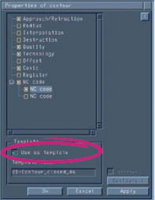
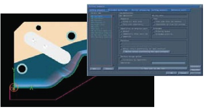
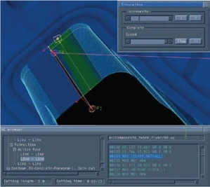
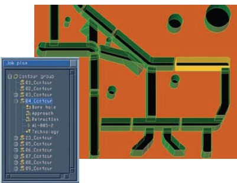
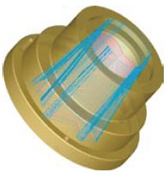
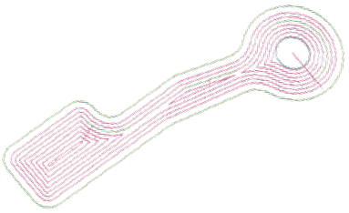
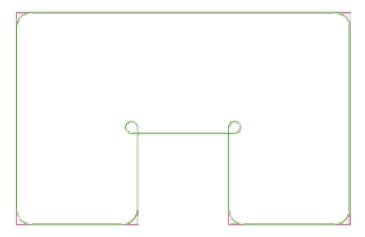
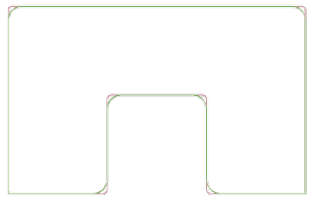

|
4. Kontur özelliklerinin atanmasý ve iþ prosesinin standartlaþtýrýlmasý
Erozyon prosesi için gerekli tüm özellikler hýzlý ve kolayca tanýmlanabilir. Kontur özellikleri için yapýlan tüm parametre ayarlarý tek bir tuþla bir þablona atanýp bundan sonraki diðer iþlemeler için bu þablon kullanýlabilir.
 |
Template (þablon) ile tanýmlama seçenekleri;
1. Tel yanaþma ve uzaklaþma stratejileri
2. Otomatik köþe yuvarlama
3. Ýnterpolasyon çizgi hesaplama
4. Küçük konturlar için cep boþaltma
5. Teknoloji parametreleri, kalite ve register tanýmlama
6. Ýþleme stratejileri için ilave teknoloji
7. Ýlave ofsetler, kalacak paylar vb.
8. Standart konik açýlarý
9. Doðrudan makine komutlarý ekleme |
5. Ýþleme stratejisinin tanýmlanmasý
Ýþleme stratejileri tanýmlanýrken önceden tanýmlanmýþ hazýr parametre setlerinin yaný sýra seçilebilecek birçok opsiyon da kullanýcýya sunulur. Karmaþýk kesimler için gerekli olabilecek tanýmlamalar tablo ve formlar kullanýlarak kolayca yapýlabilir. Bu formlar önceden tanýmlanmýþ birçok parametrenin seçimi yanýnda iþe özel tanýmlamalarýn da kolayca yapýlabilmesini saðlar. Örneðin; gündüz/gece vardiyalarýnda yapýldýðý gibi önce ana kesimlerin sonrasýnda ise finish kesimlerin gerçekleþtirilmesi isteniyorsa, bu düzenleme Tebis kullanýlarak kolayca gerçekleþtirilir.

Çarpmalarý engellemek için erozyon konturlarý arasýnda telin
geçiþ pozisyonlarýnýn her birini belirleyebilirisiniz.
6. Kesimin izlenmesi ve görüntülenmesi
Sistem erozyon iþinin tüm adýmlarýný grafik olarak ve semboller kullanarak görüntüler. Telin tüm hareketleri ve tel geçirme, kesme, parça ayýrma gibi iþlemler görüntülenebilir. Entegre edilmiþ NC browser kullanýlarak programýn her bir adýmý etkileþimli olarak izlenebilir ve NC kod ve program yapýsý arasýndaki iliþkiler görülebilir.

Kullanýmý kolay iþ planý
Tebis yazýlýmý, tel erozyon iþlerinizin programlanmasýný basitleþtirmenize ve optimize etmenize imkan saðlayan birçok yetenek sunar. Ýþ planý tablosu; merkezi kontrol elemaný görevi yaparak sýklýkla kullanýlan parametre ve fonksiyonlara düzenli ve kolay bir eriþim saðlar. Her kesme adýmý görüntülenir, belgelenir ve her yeni tanýmlanan kontur ya da özellik uygun bir sembol ile gösterilir. Windows Explorer'da olduðu gibi seçme, kopyalama ve sürükle býrak özelliklerini içerir. Çift týklama ile düzenleme menüsü açýlýr ve deðiþiklikler yapýlýr.

Model üzerinden bir elemanýn seçilmesi ile birlikte, iþ planýnda iliþkili kontur iþaretlenir.
Yüksek hassasiyette eðri fonksiyonu
Yüksek hassasiyetli eðri fonksiyonlarý, NC kodlar için optimal konturlarý hazýrlamanýzý saðlar. Sistem cep boþaltma, interpolasyon ve otomatik radyus oluþturma fonksiyonlarý için hassas hesaplamalar yapar. Bu ise kullanýcýya efektif iþleme zamanlarýna sahip kýsa programlar sunar.
 |
 |
Teðet geçiþler saðlamak ve eleman sayýsýný azaltmak için, interpolasyon çizgileri kullanýcýnýn tanýmladýðý tolerans aralýðýnda hesaplanýr. |
Makine operatörleri tarafýndan ekstra bir iþlem gerektirmeden, malzemenin cep açma yöntemi ile kesilmesi. |
 |
 |
Kontur iç ve dýþ köþelerin otomatik olarak yuvarlatýlmasý, hassas keskin köþeler için düðüm þekilli kesim. Otomatik olarak radyüslenen konturlar daha sonra CAD eðrileri olarak kopyalanabilir. |
Konturdaki mevcut radyüslerin, parametrik olarak deðiþtirilmesi. Bu yetenek tek kontur kullanýlarak diþi erkek geçmelerin kesilebilmesini saðlar. |
|